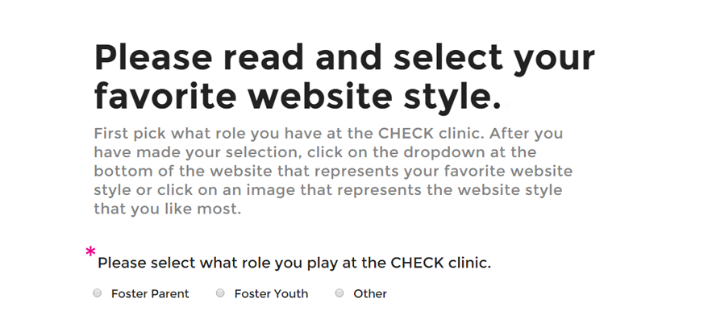
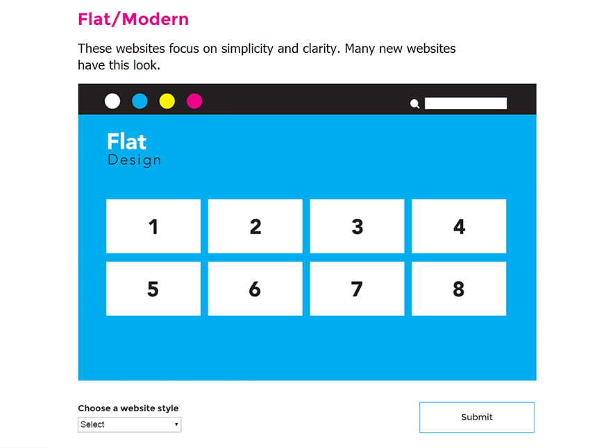

Click on the button below to view the entire research process that went into this project.
View Research PDFClick on the button below to view the entire Ideation process that went into this project.
View Ideation PDFClick the button below to view the entire refinement process that went into this project.
View Refinement PDFDuring the second part of the research phase, the team was responsible for interviewing stakeholders. My role was to create a physical activity designed to gain insights.
I took the initiative to then translate this activity into a digital platform for the interviews that took place remotely—something that I am now known for.
Instead of tallying all of the data by hand, I created a platform to gather and analyses all of the data automatically.
During the second part of the research phase, the team was responsible for interviewing stakeholders. My role was to create a physical activity designed to gain insights.
I took the initiative to then translate this activity into a digital platform for the interviews that took place remotely—something that I am now known for.
Instead of tallying all of the data by hand, I created a platform to gather and analyses all of the data automatically.
It is strongly reccomended that the prototype is viewed using Google Chrome.
View Prototype View Live SiteDuring the second part of the research phase, the team was responsible for interviewing stakeholders. My role was to create a physical activity designed to gain insights.
Below, the users must choose their role in relation to the foster care system and the CHECK clinic. This allows the website to know how many of each demographic has participated. The data from this website will later be separated between the different stakeholders.
The users must then choose between three website styles. This gives the team an idea of a basic style that is preferred.
Finally, the users drag the cards down into the placeholders. They are given instructions telling them the spot number one is the most preferred reason they get online and number eight is least.
Instead of tallying all of the data by hand, I created a platform to gather and analyses all of the data automatically
Instead of tallying all of the data by hand, I created a platform to gather and analyses all of the data automatically
Instead of tallying all of the data by hand, I created a platform to gather and analyses all of the data automatically
Instead of tallying all of the data by hand, I created a platform to gather and analyses all of the data automatically